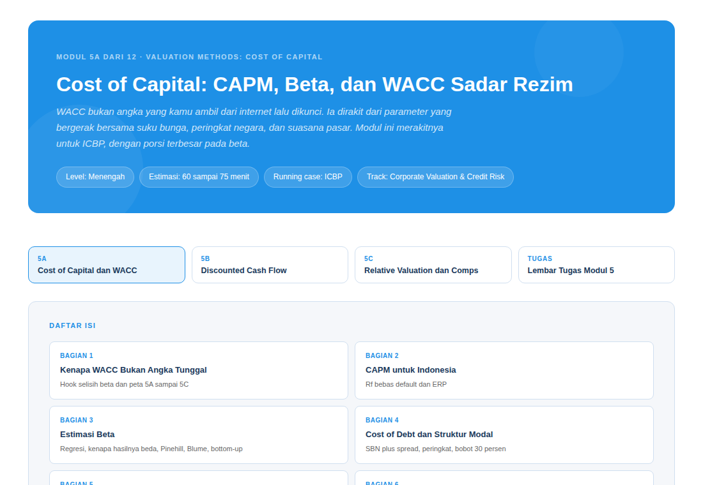
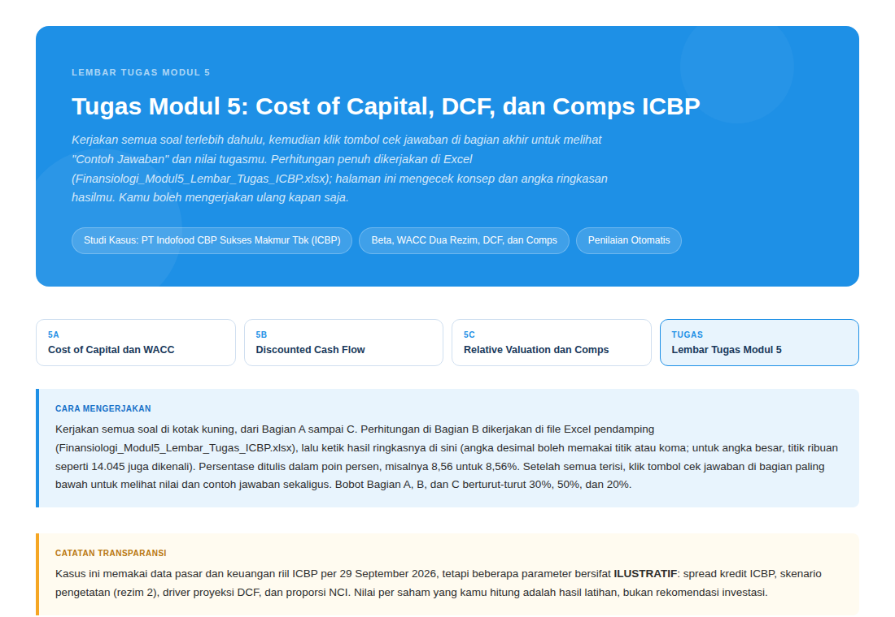

1
Materi ringkas
Halaman materi yang padat dengan contoh Indonesia dan Latihan Konsep di sela bacaan. Bisa dibuka di browser apa pun.
12 modul, satu studi kasus (ICBP), dengan latihan interaktif dan Excel yang bisa kamu unduh.
"Sebelum kamu menghitung angka, pahami dulu cerita di balik bisnisnya."


Valuation dan credit risk sering diajarkan terpisah. Padahal keduanya memandang perusahaan yang sama dari dua sisi.
Analis valuasi bertanya berapa nilai perusahaan. Analis kredit bertanya apakah janji bayarnya akan ditepati. Angka yang mereka pakai sama: EBITDA, utang, arus kas. Di program ini kamu belajar keduanya bersamaan, lalu melihat bagaimana satu sisi menggerakkan sisi lain.
Baca konsepnya, uji pemahamanmu, lalu kerjakan angkanya sendiri. Modul 1, 2, dan 11 berupa bacaan.
Halaman materi yang padat dengan contoh Indonesia dan Latihan Konsep di sela bacaan. Bisa dibuka di browser apa pun.
Jawab semua soal dulu, lalu satu tombol memberi nilai sekaligus contoh jawaban. Kamu boleh mengulang kapan saja.
Perhitungan penuh dikerjakan di Excel. Sel kuning adalah input, sel hijau adalah jawabanmu.
Bukan contoh yang berganti tiap bab. Satu perusahaan, PT Indofood CBP Sukses Makmur Tbk, kamu bedah dari laporan keuangan sampai keputusan fasilitas kredit.
Data pasar dan laporan keuangannya nyata. Di sepanjang jalan kamu bertemu utang dolar, peringkat kredit, dan akuisisi Pinehill (Agustus 2020) sebagai bahan latihan.
Skenario downgrade adalah latihan ILUSTRATIF, bukan proyeksi peringkat.
Dari fondasi, valuation, credit risk, jembatan keduanya, peta karier, sampai capstone. Klik modul untuk melihat detailnya.
Di capstone, Modul 3 sampai 10 kamu satukan menjadi satu model. Angka FSA mengalir ke WACC dan DCF, ke LBO, ke skor kredit, ECL, covenant, sampai kapasitas utang.
Lalu kamu menyusun memo dan mempresentasikannya seperti di depan komite kredit dan investasi: rentang nilai, metrik kredit, dan putusan fasilitas.
Fasilitas kredit HIPOTETIS; keputusan committee adalah latihan.
Melihat teori keuangan dipakai pada perusahaan sungguhan.
Menyiapkan cara berpikir analis sebelum hari pertama kerja.
Menghubungkan pekerjaan sehari-hari dengan gambaran besarnya.
Membangun fondasi yang runtut, dari dasar sampai model terintegrasi.
Memahami bahasa angka yang dipakai tim keuangan dan bank.
Membaca laporan, valuasi, dan analisis kredit dengan percaya diri.
Tidak. Modul 1 sampai 4 adalah fondasi: peta besar, corporate finance, analisis laporan keuangan, dan time value of money. Level program pemula sampai menengah.
Disarankan, karena studi kasus ICBP berlanjut dari Modul 3 sampai 12 dan capstone menyatukan Modul 3 sampai 10. Tapi semua modul terbuka, jadi kamu bebas melompat ke topik yang kamu perlukan. Modul 9B bersifat lanjutan opsional.
Browser modern untuk materi dan tugas interaktif, serta Microsoft Excel atau LibreOffice untuk berkas .xlsx. Tidak perlu login.
Tugas interaktif menampilkan contoh jawaban setelah kamu mengecek. Jawab semua soal dulu, lalu satu tombol memberi nilai dan contoh jawabannya. Kamu boleh mengulang.
Data pasar dan laporan keuangan ICBP nyata, per 29 September 2026. Parameter kredit bersifat ILUSTRATIF, sedangkan fasilitas kredit dan LBO dalam latihan bersifat HIPOTETIS.
Tidak. Studi kasus dipakai untuk tujuan belajar. Nilai per saham yang kamu hitung adalah hasil latihan, bukan rekomendasi investasi, dan program ini tidak berafiliasi dengan ICBP.
Buka silabus, pilih modul pertama, dan kerjakan tugasnya langsung di browser.